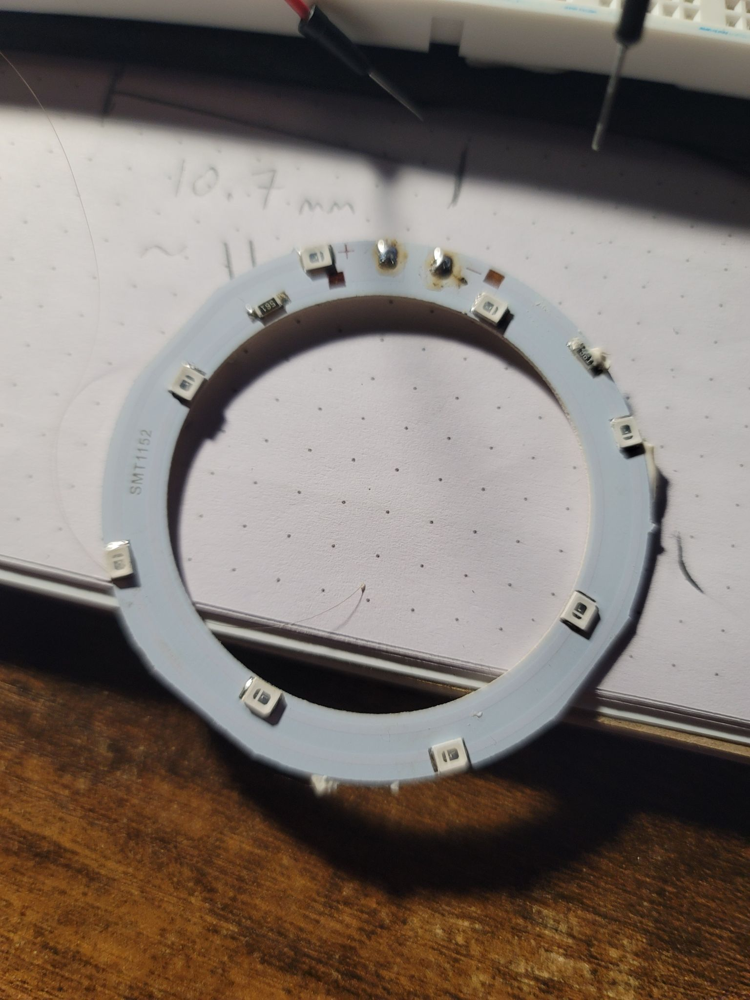

Arc Reactor
An Iron Man-style chest light from two Hover-1 Helix LED rings, worn under a shirt on a chest strap.
Salvaged the rings, tested them, and started the mount plan · Nov 2026 – present

Problem
I pulled two LED rings out of the Hover-1 Helix wheels (the CyberBoard donor) and want a small arc reactor I can wear on my chest under a shirt.
Constraints
- Quick build: a 3D-printed housing, an on/off button, and a diffuser
- Mounts on a chest GoPro strap. The mounting bracket is already off
- Low profile under a shirt. The resistors ran warm at 18 V, so the housing needs vents or a standoff from the chest
- Ender-3, about 220 × 220 mm, PLA
Key result
Not modeled yet. Both rings stay dark on a single 9 V battery, light on a brief 18 V tap, and work perfectly on 12 V batteries. That is the supply.
Measured parameters
| Parameter | Value | Basis |
|---|---|---|
| Supply | 12 V batteries | Measured |
| Bench check | 18 V for 1–2 seconds | Measured; two 9 V batteries in series |
| LEDs per ring | 9 | Counted |
| Series resistors | 3 × 100 ohm | Marking read (101) |
Results
| Check | Result |
|---|---|
| One 9 V battery | No light, both rings |
| 18 V, brief tap | Both rings light |
| 12 V batteries | Work perfectly |
Failure and fix
A single 9 V battery left both rings dark, and diode mode on my CEN-TECH meter read OL both ways. They had already worked on the hoverboard, so I worried the soldering heat from pulling them off had killed them. That meter can false-fail these LEDs, and 9 V is at or below the string voltage (a 9 V battery also sags under load). Two 9 V batteries in series, tapped for 1–2 seconds at 18 V, lit both rings. I do not leave them on 18 V: the 100 ohm resistors run warm. They now run on 12 V batteries.
Decisions
| Decision | Choice | Tradeoff |
|---|---|---|
| Chest mount | Flat, slightly textured glue pad. The strap's back plate is hot-glued to it | The GoPro bracket is already off, so a printed 2-prong has nothing to mate with. Stays thin under a shirt; the joint is not meant to come apart often |
| Supply | 12 V batteries | 9 V is too low. 18 V is a bulky bench workaround, and the resistors run warm. A 3S pack or a USB-C boost was not needed |
| Diffuser | Required on the front of the housing | An under-shirt preview did not look right without one. Material is still open: translucent white PLA or PETG, or frosted acrylic |
Visuals

Next steps
- Measure the rings (outer diameter, inner diameter, thickness, and pad positions), the strap back plate, and the 12 V batteries
- Choose one ring or both, a latching or momentary button, and the diffuser material
- Model a low-profile housing with the button, diffuser, and vents or a chest standoff. CAD has not started